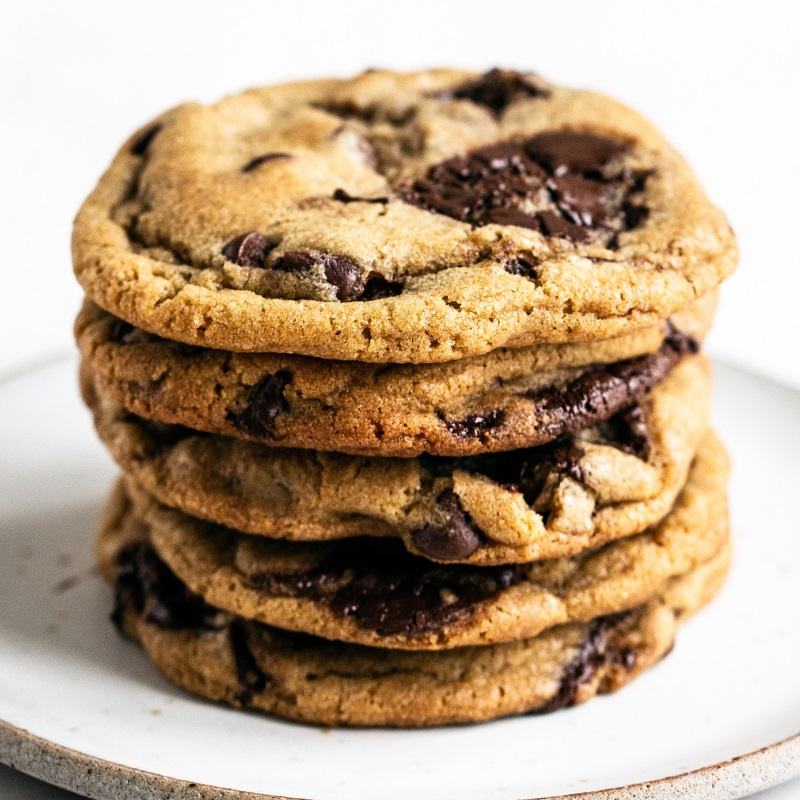

Brown Butter Chocolate Chipt Cookies

Description
Chewy, gooey, and crunchy Brown Butter ChocolateChip Cookies are loaded with flavor and will surelybecome your new favorite cookie recipe! No mixerrequired.
Ingredients
- 2 sticks (227 grams) unsalted butter
- 1/2 (100 grams) cup granulated sugar
- 1 1/4 cups (250 grams) lightly packed dark brown sugar
- 1 1/2 cups (190 grams) all-purpose flour
- 1 cup (127 grams) bread flour
- 1/4 teaspoon baking powder
- 1 teaspoon baking soda
- 1 teaspoon fine sea salt
- 2 large eggs plus 1 egg yolk, at room temperature
- 2 teaspoons vanilla
- 1 1/2 cups (255 grams) semisweet chocolate chips
- 1 cup (140 grams) semisweet chocolate baking wafers (from Guittard or Valrhona)
Steps